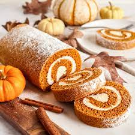

Pumpkin Cheesecake Roll

Description
This pumpkin roll recipe is a pinwheel-like dessert, best served chilled, made of spiced pumpkin cake with
spirals of cream cheese filling inside. This may seem like a complicated
bake, but rest assured it's much easier than you think! There are only two ground rules, be very gentle
while rolling, and watch the cooking time. Keeping the cake moist and springy is key to successful, uncracked
spirals.
Here's a few simple tips before we start: Your cream cheese frosting should be a bit stiff, so it doesn't
squeeze out when you roll the cake out, but too much stiffness can tear the cake as you spread the frosting
on. Sounds tricky, but just remember the principle: We want to be able to safely roll the cake around
the frosting, without any cracks or runaway frosting. Let's begin!
Ingredients
For the cake
- Cooking Spray
- 1 c. granulated sugar
- 3/4 c. all-purpose flour
- 1/2 tsp. kosher salt
- 1 tsp. baking soda
- 1/2 tsp. pumpkin spice
- 3 large eggs
- 2/3 c. pumpkin puree
- Powdered sugar (for rolling)
For the filling
- 12 oz. cream cheese, softened
- 1 tbsp. butter, melted
- 1 tsp. pure vanilla extract
- 1 1/4 c. powdered sugar
- 1/2 tsp. kosher salt
Steps
- Preheat oven to 350°. Line a 15" x 10" jelly roll pan with parchment, then grease pan with cooking spray.
In a large bowl, combine sugar, flour, salt, baking soda, pumpkin spice, eggs, and pumpkin puree until just combined.
Spread into prepared pan and bake for about 15 mins. Insert a toothpick into center of cake, and if it comes out clean, it's done!
- While cake is baking, lay out a large kitchen towel on a clean, flat countertop & dust with powdered sugar. When cake is done baking,
quickly flip onto kitchen towel and slowly peel off parchment paper. (Remember, theres no rush! We don't want to take any bits of cake
off with the paper.)
- Starting at a short end, gently (but tightly) roll cake into a log. Let it cool completely.
- Meanwhile, let's start on the filling: In a large bowl, combine cream cheese, melted butter, vanilla, powdered sugar, and salt. Using a
hand mixer, whip until you have a smooth consistency.
- When cake is finished cooling, gently unroll. (It's ok if it's still slightly curled. Trying to flatten it too much may cause breaks.)
Spread with cream cheese filling, gently roll back up, and dust with powdered sugar. Slice and serve.